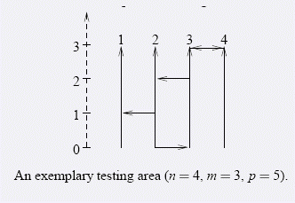

成都的驾驶考试在一个有n条平行的自南向北的单向的道路的场地中进行。每条道路长度为m米，并且都在同一
条水平线上开始和结束。街道从西向东分别编号为1到n。同样有p条单向的自西向东或自东向西的街道垂直于上面
描述的街道，每一条这样的街道链接了两个相邻的自南向北的道路。当然自西向东和自东向西的道路可以重叠，那
就是一个双向的街道了。

考生选择一个自南向北的道路作为他考试的起始点和另外一个自南向北的道路作为他考试的终止点。他们的考
试项目是将车从开始的道路驾驶到作为终止点的道路。考生们总是选择一个可以到达所有其他街道的起始道路作为
开始点。现在，考生们总是感到十分无趣因为他们只有很少的起始道路可以选择，所以教练们决定改造先有的考试
场所，由于经费的限制，他们决定添加至多K条东西向的道路，使得能够选择的起始道路尽量地多。